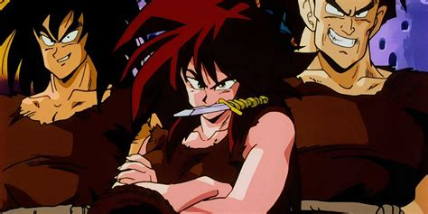

Introduction

Saiyans
Saiyans are a race of alien beings core to the Dragon Ball Series.The Saiyans used to live in their home Planet Sadala which was destroyed in internal conflict after which they conqured the Planet Plant, home to Truffles and named it Planet Vegeta, after their most fearsome warrior and leader, King Vegeta.The Saiyans worked under Frieza, a Frost Demon whose power was feared over the whole Galaxy. There they worked as planet brokers, conquering planets and selling them to the highest bidder. The protagonist of the series, Goku(Saiyan name Kakarot) was sent to Planet Earth for a similar cause.
Body Structure and Special Abilities
The body structure of Saiyans is Humanoid with a tail sticking out of their back. That tail is generally the weak point of the Saiyans but there are cases where strong warriors like Vegeta have overcome this liability.The Saiyans tails serve two distinct purposes. the first is balancing their body and utilising it as a "third hand", like real world monkeys do. The other is their race transformation to a Great Ape or Oozaru. This transformation happens when the Saiyans look at the full moon on any planet. This stage increases their power to approximatelt 10 times their original but the user loses any control over this form,fighting through raw instinct and destroying everything in their path. Although cases of mastering this form has been seen, as in the case with Vegeta who not only controlled this form, but also showed signs of intelligence(eg. Speaking) which were previously thought impossible.
Due to their home planet Planet Sadala's huge gravity(ten times that of earth), They were generally much stronger than other races.They also show a degree of Ki control which is superior to humans but lack creativity and thus have very basic forms of Ki manipulation.
The Saiyans also have the ability to transform into different forms namely Oozaru, Super Saiyan, Super Saiyan 2
Super Saiyan 3, Super Saiyan 4, Super Saiyan Blue, Super Saiyan Blue Evolved and Super Saiyan God.
These Transformations have conditions which are to be met for a successful transformation. Later on these transformations become key to the Protagonist Goku, Vegeta and other Hybrid Earth-Saiyans for combat.